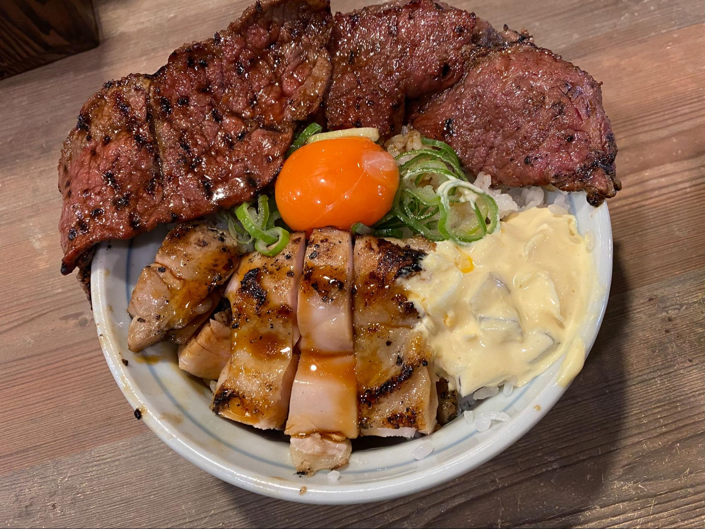
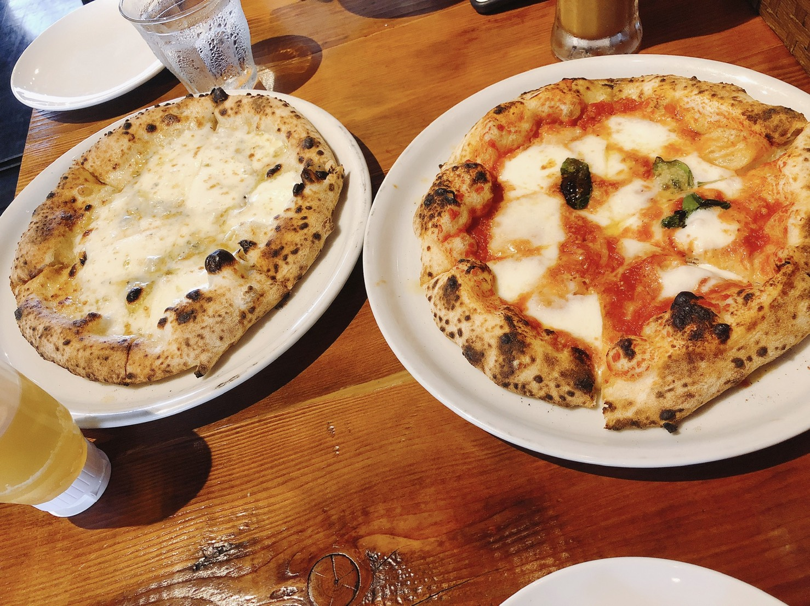

魅惑のグルメ「ワセメシ」の世界
ワセメシ。この言葉を知っていますか？
ワセメシとは、早稲田と高田馬場の間にお店をかまえて、早大生の胃袋を掴む、絶品グルメの総称です。今回はさまざまなワセメシを紹介していきます！
東京麺珍亭本舗 鶴巻町本店
場所：東京都新宿区早稲田鶴巻町555-18 クレール早稲田1階
価格帯：¥600～
営業時間：
- [月～金] 11:00～翌3:00
- [日祝] 11:00～24:00
おすすめメニュー：油そば（普通の味）
#早大生のソウルフード #給油 #キングオブワセメシ
まず新入生のみなさんに紹介したいのは油そばの名店「東京麺珍亭」！
このお店、運スタの先輩たちに早稲田の周りの4軒の油そば屋さんから「あなたの推しの油そばはどこ？」とアンケートを実施したところ堂々の1位に輝いたお店なんです。ちなみに投票の結果はこちら！
- １位 味、価格、量、全てが高水準な「東京麺珍亭本舗」（通称：麺珍、39票）
- ２位 豪華な具材と質で勝負する「油SOBA 図星」（通称：図星、26票）
- ３位 手頃な価格が魅力の「油そば専門店 麺爺」（通称：麺爺、15票）
- ４位 コッテリ系特有の中毒性が持ち味の「武蔵野アブラ學会」（通称：學会、13票）
実際に理由を聴いてみると「いっちゃん胃に優しい」「油の量がちょうどいい」とガッツリ系グルメである油そばの中でも万人受けするマイルドなテイストが多くの人の支持を集めたようです。油そば初心者にはうってつけ！
運スタ人気1位の座は麺珍となりましたが、マイ・ベスト油そばを求めて4軒コンプリートしてみては？！ 優しい先輩が奢ってくれるかも(笑)
炭焼丼専門店 どんぴしゃり
場所：東京都新宿区戸塚町1丁目101‐1 早稲田大学正門から徒歩3分
価格帯：～¥1,100
営業時間：
- [月～金] 11:00～15:00 17:00～23:00
- [日] 定休日
おすすめメニュー：炭火焼豚丼(↑)
#炭焼き丼専門店 #どんぴしゃり #ワセメシコラボ #がっつり
早稲田大学を出て早大南門通りを少し歩くと見える炭火焼専門店どんぴしゃり。
昨年は早稲田祭とコラボしたメニュー、その名も「牛肉の希少部位ざぶとん はみ出る炭火焼丼 和牛ガーリックバターグレイビーソース ～今新たな肉、喰らわんか！！～」が販売され大盛況でした。自家製タルタルソースがかかった香ばしい鶏の炭火焼と、ニンニク風味のグレイビーソースとの相性が抜群なとろける牛肉の丼で、上にはこだわりの濃厚卵がのっており、言葉を失うほどのおいしさでした。
みなさんもぜひ運スタで、早稲田の街を盛り上げるコラボメニューを考えてみてはいかがですか？
Pizzeria TAKATA BOKUSHA
場所：東京都新宿区戸塚町1-101（南門のすぐ前）
価格帯：昼1,000～ 夜3,000～
おすすめメニュー：クワトロフォルマッジ
営業時間：
- [月~金] 11:30～14:00(LO) 17:30～21:00(LO)
- [土] 11:30～21:00(LO)
- [日祝] 11:30～20:00(LO)
#おしゃれ #本当におしゃれ #もはやここは六本木 #政経民御用達
「ワセメシってガッツリ系ばっかりなの？」と思ってるそこのあなた！ 安心してください！ 早稲田にもおしゃれなお店はありますよ！ その名も『Pizzeria TAKATA BOKUSHA』✨
1905年に創業して100年以上営業してる老舗のイタリアンレストラン。ランチタイムなら美味しいピザをサラダ・ドリンク付きでなんと1000円代で食べれちゃいます！ オススメは何と言ってもクワトロフォルマッジ！ たっぷりのチーズに蜂蜜をかけて食べてみて！ 政経の経済学を教えているT先生も授業で紹介しちゃうくらい絶品ですよ♡ ワンちゃん同伴可など、まだまだ沢山の魅力があるPizzeria TAKATA BOKUSHA！ ぜひ訪れて見てください☺
焼肉ホドリ
場所：東京都新宿区馬場下町61（早稲田駅3a出口の目の前）
価格帯：¥800～
おすすめメニュー：まつりランチ
営業時間：11:00～23:00
#代表のおすすめ #早稲田で焼肉 #安いおいしいボリューミー
最後に紹介するのは我らが代表・小野寺佑月がおすすめする『焼肉ホドリ』です。1年生から通い詰めるこのお店の推しポイントは何といっても安さとボリューム！ まつりランチではカルビ250g（キムチ・ライス・スープ付き）を税込880円で食べられちゃいます！しかも頼んですぐに出てくるので、空きコマにパパっと行けちゃいます！ ここで代表の食レポを見てみましょう！
「しっかり焼いたのに柔らかくて、尚且つ味もついてて、凄い美味しいお肉だと思います。一番柔らかいお肉だと思います。」
魅力を存分に表現してくれました(笑) 最後はスマートに奢ってくれた代表！流石！ご馳走様です！
いかがでしたでしょうか？
ガッツリ系からおしゃれ系まで、ワセメシは多種多様で面白いですよね。運スタとも馴染み深いワセメシ、この記事を参考にしてぜひ巡ってみてください！
ワセメシについてもっと知りたい方は運スタに直接話を聞けるチャンス！
交流企画もぜひご利用ください。
新歓イベント情報はこちら